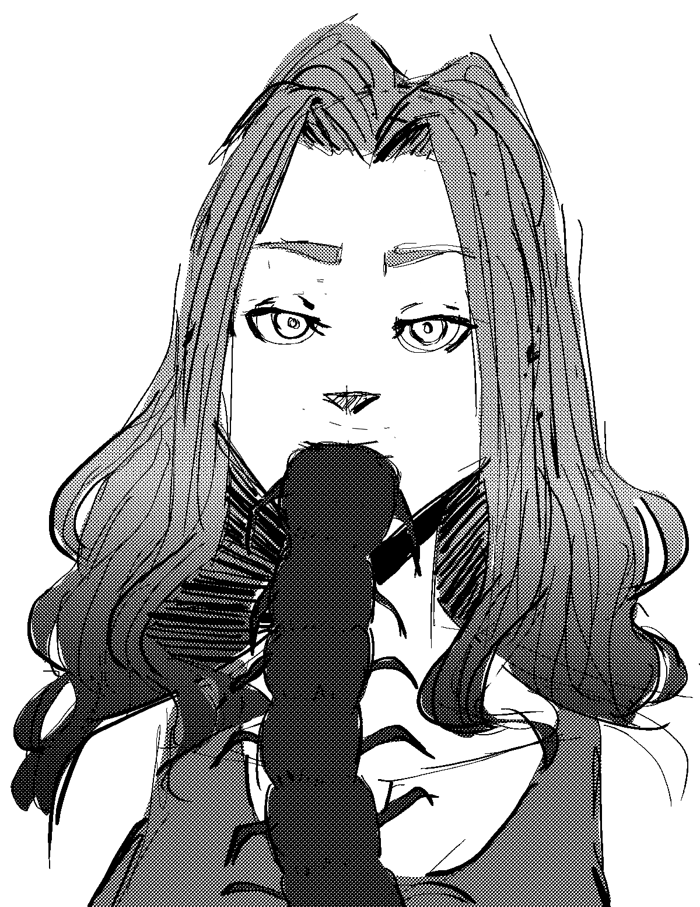
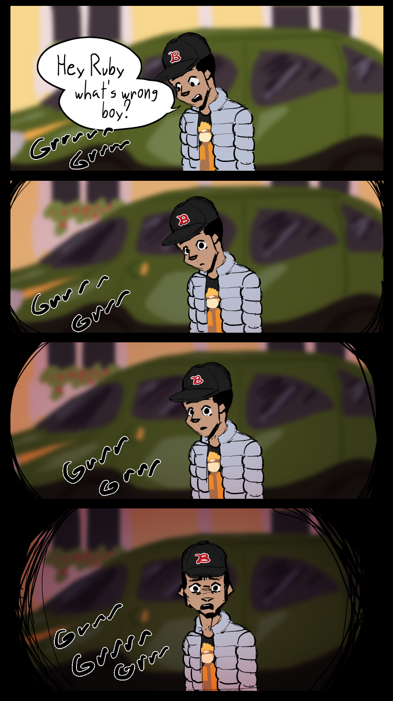
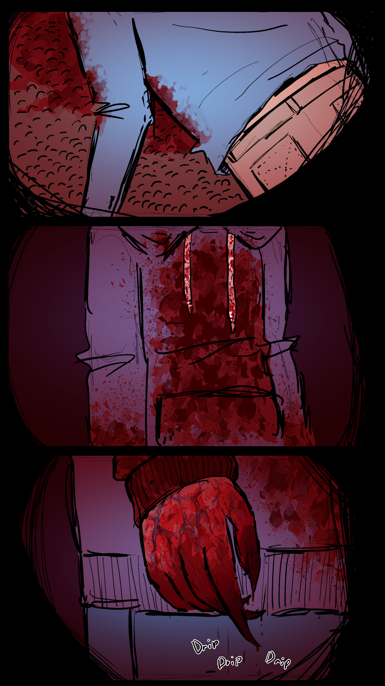
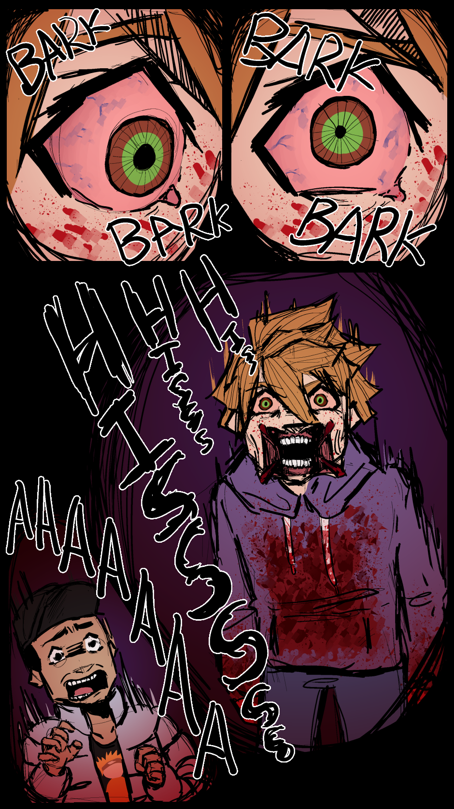
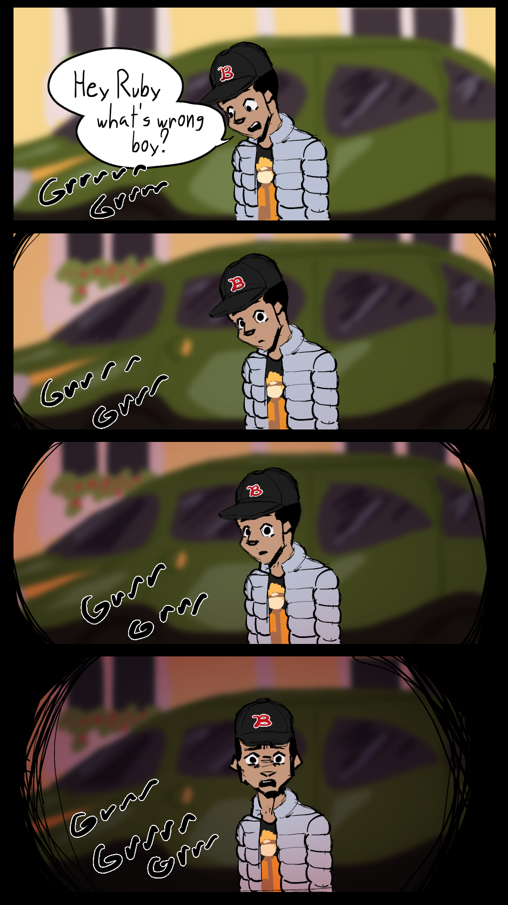
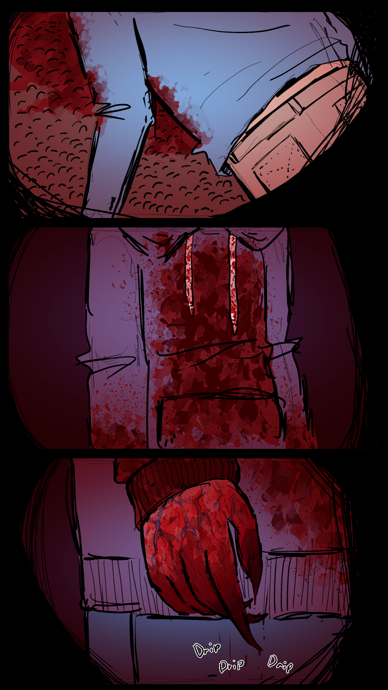
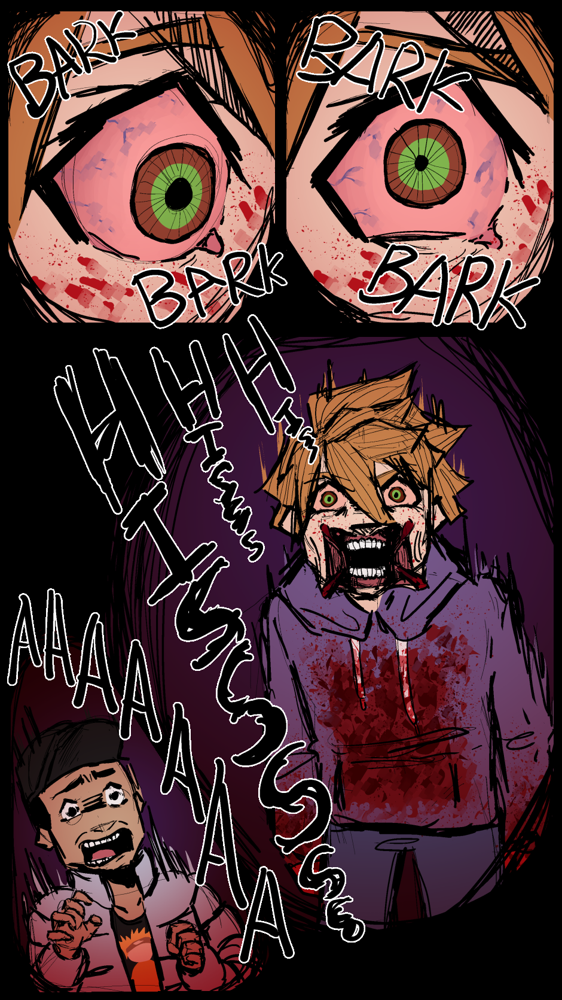
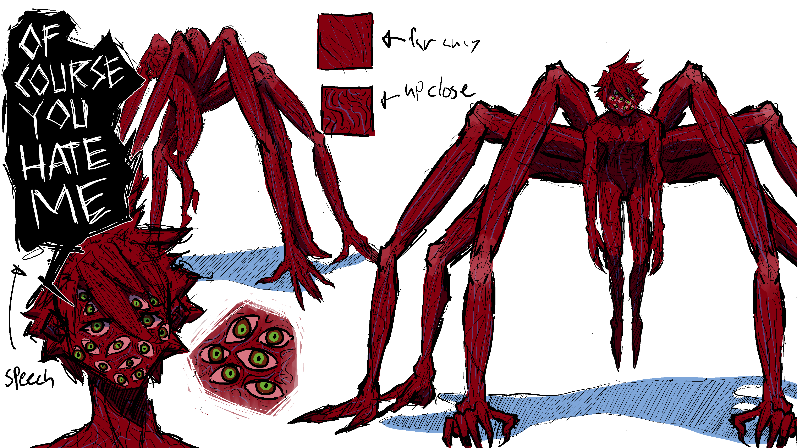

The following art is made in Clip Studio Paint EX

Natalie Swallowing Herself (September 19, 2022)
Natalie has the ability to transform her blood into anything, including into centipedes.
But, of course, she can't just loose her blood. So she swallows it back into her body.
 





Blood Boy Comic Sample (October 27, 2022)
A horror sequence that was in my webcomic called Blood Boy, a surreal scifi horror. As of me typing, this is
still on tapas.io, but I'm currently rewriting the comic. I'm putting this on my portfolio that despite this
won't be on the final copy of Blood Boy, I think I did very well here as a comic artist to create suspense and
horror. Especially since I made one of my friends who isn't actually squeemish get squeemish so I call that a win.

Jason Reference 1 (February 5, 2023)
This is called "Jason Reference 1" because that's what I ended up naming the file as. In reality this isn't the
first time I've made concept art for this fella. Some of it isn't truly horriffic, some is such as this one.
• 🙛 ❀ 🙙 •